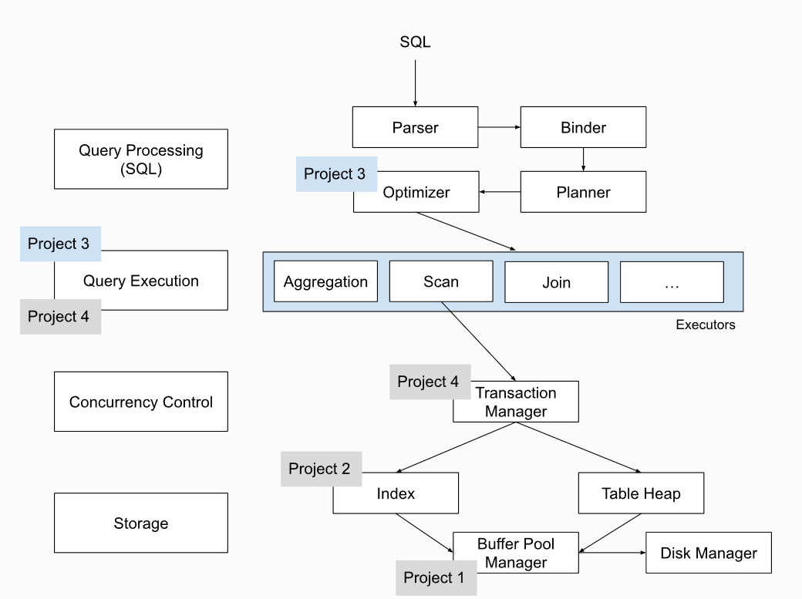
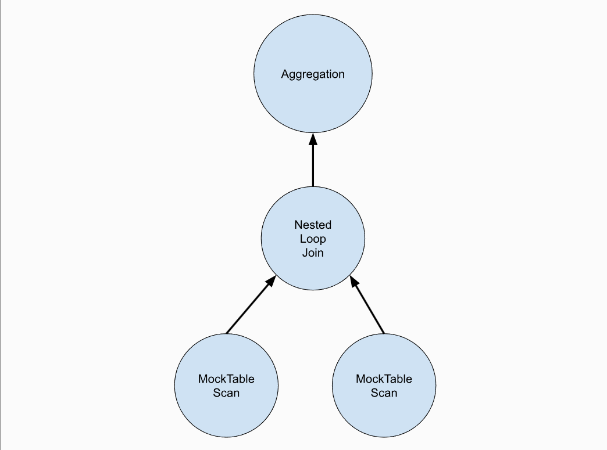

又记一次很久没更新了，写完项目真的应该及时记录博客思路，不过现在作为一个回顾也不错。P3这一部分需要我们实现数据库的执行引擎算子，同时需要我们阅读大量的代码来理解项目内部的数据结构。
首先我们来看一下Bustub的整体架构图：

我们梳理一下从一条SQL语句开始到执行结束的整个过程：一条SQL语句，首先经过 Parser 生成一棵抽象语法树 AST。在得到 AST 后，Binder 遍历 AST，将这些词语绑定到数据库实体上。实体是 Bustub 可以理解的各种 c++ 类。绑定完成后，得到的结果是一棵 Bustub 可以直接理解的树。把它叫做 Bustub AST。得到 Bustub AST 后，Planner 遍历这棵树，生成初步的查询计划。查询计划也是一棵树的形式，查询计划规定了数据的流向。数据从树叶流向树根，自底向上地流动，在根节点输出结果。由 Planner 得到初步的查询计划后，再将查询计划交给 Optimizer 进行修改优化（可以采用预定义规则或者代价评估的方式进行），最后生成优化过后的最终查询计划。在拿到 Optimizer 生成的具体的查询计划后，就可以生成真正执行查询计划的一系列算子了，也就是我们在P3中需要实现的部分。
算子的执行模型大致分为以下三种：
- Iterator Model/Pipeline Model，或火山模型。每个算子都有
Init()和Next()两个方法。Init()对算子进行初始化工作。Next()则是向下层算子请求下一条数据。当Next()返回 false 时，则代表下层算子已经没有剩余数据，迭代结束。这种模型的弊端在于函数开销大。 - Materialization Model，所有算子立即计算出所有结果并返回。和 Iterator Model 相反。这种模型的弊端显而易见，当数据量较大时，内存占用很高。但减少了函数调用的开销。比较适合查询数据量较小的 OLTP workloads。
- Vectorization Model，对上面两种模型的中和，一次调用返回一批数据。利于 SIMD 加速。目前比较先进的 OLAP 数据库都采用这种模型。
这里课程采用的是第一种方式。

Task1-Access Method Executors
Task 1 包含 5 个算子，SeqScan、Insert、Delete、Update 和 IndexScan。实现时所有要用到的系统资源，例如 Catalog，Buffer Pool 等，是由 ExecutorContext 提供的。
- SeqScan：需要读取给定 table 中的所有 tuple，仅会出现在查询计划的叶子节点处。这里我们使用已经提供的
TableIterator进行扫表的元组操作。 - Insert：需要我们实现插入元组的操作，插入元组的顺序是没有要求的，这是数据中的三大写算子之一。Insert 一定是查询计划的根节点，且仅需返回一个代表修改行数的 tuple。同时，我们需要更新与 table 相关的所有 index。index 与 table 类似，同样由 Catalog 管理。需要注意的是，由于可以对不同的字段建立 index，一个 table 可能对应多个 index，所有的 index 都需要更新。
- Delete：需要我们进行元组的删除，这里并不是直接删除，而是将 tuple 标记为删除状态，也就是逻辑删除，在事务提交后，再进行物理删除。同样也是作为数据库中的写算子，出现在查询计划的根节点。
- Update：需要进行元组的更新，在这里，我们可以将更新步骤拆为两个部分，按照元组先插入再进行逻辑删除的思路进行拆分，从而完成元组的更新。Update算子同样也是作为数据库中的写算子出现。
- IndexScan：这个算子需要我们实现索引扫描的操作。可以使用我们在 Project 2 中实现的 B+Tree Index Iterator，遍历 B+ 树叶子节点。由于我们实现的是非聚簇索引，在叶子节点只能获取到 RID，需要拿着 RID 去 table 查询对应的 tuple。
Task2 - Aggregation & Join Executors
Task 2 包含了 3 个算子，Aggregation、NestedLoopJoin 和 HashJoin。
- Aggregation：这个算子需要我们实现聚合函数的相关计算。与其他算子有所不同，这个算子会打破 iteration model 的规则，在 Aggregation 的
Init()函数中，我们就要将所有结果全部计算出来。而SimpleAggregationHashTable就是计算并保存 Aggregation 结果的数据结构。SimpleAggregationHashTable维护一张 hashmap，键为AggregateKey，值为AggregateValue，均为std::vector<Value>。key 代表 group by 的字段的数组，value 则是需要 aggregate 的字段的数组。在下层算子传来一个 tuple 时，将 tuple 的 group by 字段和 aggregate 字段分别提取出来，调用InsertCombine()将 group by 和 aggregate 的映射关系存入SimpleAggregationHashTable。若当前 hashmap 中没有 group by 的记录，则创建初值；若已有记录，则按 aggregate 规则逐一更新所有的 aggregate 字段。 - NestedLoopJoin：这个算子需要我们按照嵌套循环的思路实现连接算法。NestedLoopJoin 算法本身并不难，就是需要我们注意迭代器要保存上下文信息，防止遗漏部分需要连接匹配的元组。
- HashJoin：这一部分需要我们编写一个优化规则，在满足一定条件时，将 NestedLoopJoin 优化为 HashJoin。那么在什么条件下优化为 HashJoin 呢？当然是满足等值条件时，即联接谓词是两列之间的等条件的联合时，就可以使用哈希联接算法。注意这一部分不需要我们考虑外部内存的连接算法。这里的基本思路是选择一张表（最好是小表）进行哈希处理，生成哈希表，因为需要内存中可以放得下。然后通过遍历另一表的数据，通过哈希键值查询进行匹配，满足条件则进行连接操作。
Task 3 Sort + Limit Executors and Top-N Optimization
Task 3 中要实现 3 个算子，Sort、Limit 和 TopN，以及将 Limit + Sort 在 Optimizer 中优化为 TopN。
- Sort：排序算子，需要我们在
Init()中读取所有下层算子的 tuple，并按 ORDER BY 的字段升序或降序排序。这里可以考虑采用自定义std::sort()来实现。 - Limit：这个算子需要我们限制输出前n个元组。和 SeqScan 的思路类似，只不过在内部维护一个 count，记录已经 emit 了多少 tuple。当下层算子空了或 count 达到规定上限后，不再返回新的 tuple。
- TopN：这个算子需要我们返回最大/最小的 n 个 tuple。需要我们添加优化规则，将 Sort + Limit 优化为 TopN。这里的思路是，对 plan tree 进行后序遍历，自底向上地适用规则，改写节点。遍历到 Limit 节点时，判断其下层节点是否为 Sort，若为 Sort，则将这两个节点替换为一个 TopN，进行优化。
到这里，P3的主要内容就结束咯！